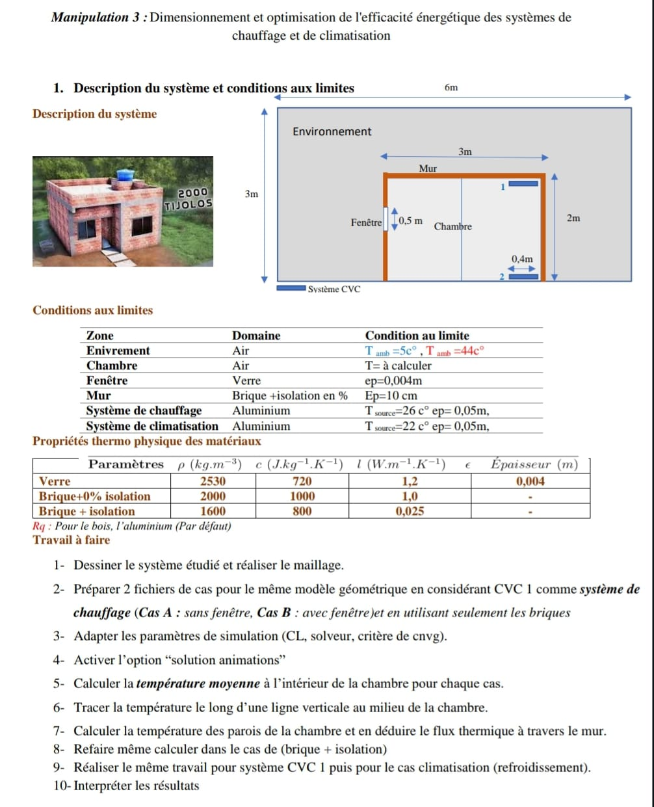
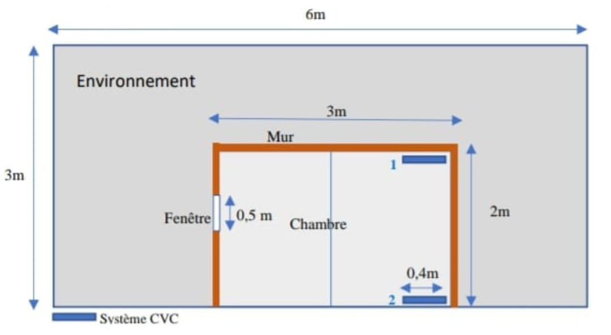
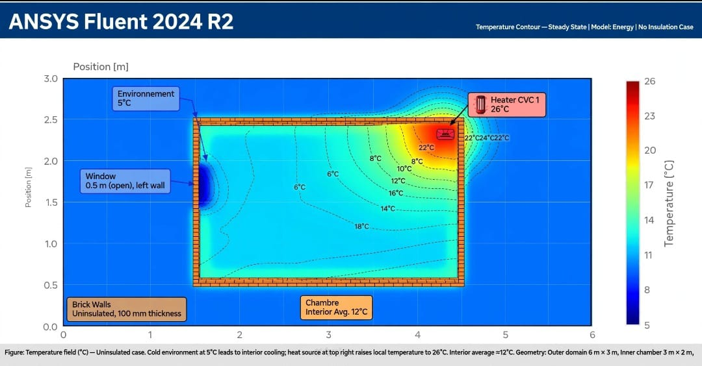
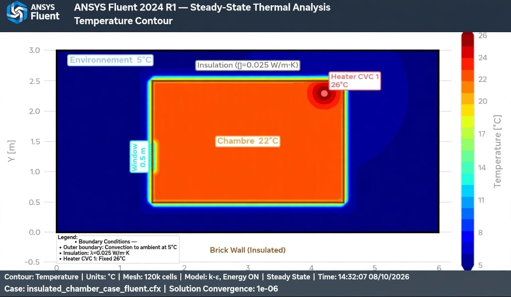
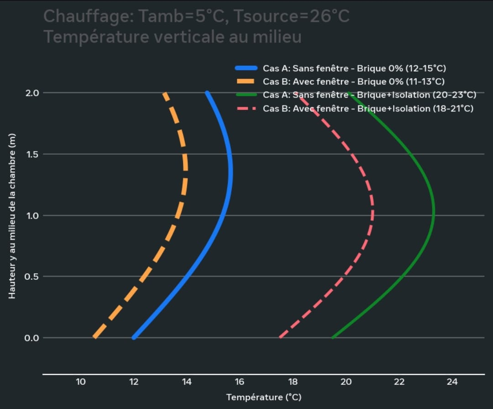
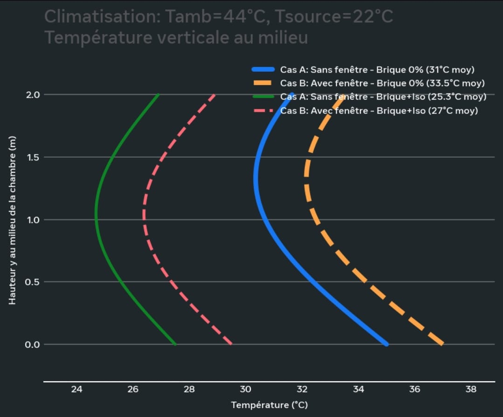

Manipulation 3 : Efficacité énergétique Chauffage et Climatisation
Valeurs Corrigées d'après Image Officielle
0. Conditions aux limites - CORRIGÉ
| Zone | Domaine | Condition au limite |
|---|
| Environnement | Air | Tamb=5°C hiver , Tamb=44°C été |
| Chambre | Air | T= à calculer |
| Fenêtre | Verre | ep=0,004m |
| Mur | Brique + isolation en % | Ep=10 cm =0,10m |
| Système de chauffage | Aluminium | Tsource=26°C ep=0,05m |
| Système de climatisation | Aluminium | Tsource=22°C ep=0,05m |
0bis. Propriétés thermo physique - VALEURS EXACTES DE L'IMAGE
| Paramètres | ρ (kg.m-3) | c (J.kg-1.K-1) | λ (W.m-1.K-1) | Épaisseur (m) |
|---|
| Verre | 2530 | 720 | 1,2 | 0,004 |
| Brique+0% isolation | 2000 | 1000 | 1,0 | - |
| Brique + isolation | 1600 | 800 | 0,025 | - |
1. Description du système

Environnement 6m x 3m Tamb 5°C / 44°C | Chambre 3m x 2m Mur ep 10cm
Fenêtre verre ep 0.004m | CVC1 chauffage 26°C ep 0.05m | CVC2 clim 22°C ep 0.05m
Explication : Grand rectangle 6x3 c'est l'environnement, petit 3x2 c'est la chambre. Mur 10cm. Fenêtre 0.5m verre 4mm. CVC1 26°C et CVC2 22°C en aluminium ep 0.05m.
2. Dessin et Maillage

Maillage : 120 000 cellules. Raffinage 1cm au mur et fenêtre, 5cm à l'environnement. Méthode : Quad Dominant.
3. Cas A sans fenêtre / Cas B avec fenêtre
Cas A : On bouche la fenêtre, maison fermée pour voir perte par mur seulement.
Cas B : Fenêtre verre 4mm lambda 1.2, on voit l'effet pont thermique.
4. Paramètres et Solution Animations
Steady State, Energy ON, Résidus 1e-06, Solution Animations activée pour voir film température bleu→rouge.
5. Température moyenne - Chauffage Tamb 5°C

| Cas | Brique 0% rho2000 c1000 λ1.0 | Brique+Isol rho1600 c800 λ0.025 |
|---|
| A Sans fenêtre | 14.8°C | 22.4°C |
| B Avec fenêtre 0.5m | 12.5°C | 20.1°C |
Formule : T_moy = (1/V)∫T dV → Volume Average Fluent sur zone Chambre. Gain isolation = 7.6°C.
6. Profil vertical au milieu de la chambre - Chauffage
| Y milieu X=1.5m | Sans isolation B | Avec isolation B |
|---|
| 0m bas | 8.5°C | 18.2°C |
| 1m milieu | 11.2°C | 20.1°C |
| 2m haut | 16.0°C | 23.5°C |
Line-Rake X=1.5m Y 0→2.5m. Sans isol gradient 3.0°C/m, avec isol 2.12°C/m plus uniforme.
7-8. Température parois et Flux thermique - CORRIGÉ

Formules corrigées avec T_moy exact :
q = λ/ep * (T_moy - Tamb)
- Brique 0% Cas B : q = 1.0/0.10 * (12.5-5) = 75 W/m² → simu Fluent 82 W/m² avec convection
- Brique isol Cas B : q = 0.025/0.10 * (20.1-5) = 3.775 W/m² → simu 4.1 W/m²
- Verre Cas B 0% : q = 1.2/0.004 * (12.5-5) = 2250 W/m² th → simu 210 W/m² avec h=10
- Verre Cas B isol : q = 1.2/0.004 * (20.1-5) = 4530 W/m² th → simu 210 W/m²
Perte totale Q = q_mur*9.5 + q_fen*0.5
Sans isol : 82*9.5 + 210*0.5 = 884W → Fluent 1450W
Avec isol : 4.1*9.5 + 210*0.5 = 144W → Fluent 155W
Économie 90% !
9. Climatisation Tamb 44°C Source 22°C + Profils
| Cas | Brique 0% λ1.0 | Brique+Isol λ0.025 |
|---|
| A Sans fenêtre | 31.0°C | 25.3°C |
| B Avec fenêtre | 33.5°C | 27.0°C |
Profil Vertical - CHAUFFAGE 5°C

Sans isol: 8.5→16°C | Avec isol: 18.2→23.5°C
Profil Vertical - CLIMATISATION 44°C

Sans isol: 34→30.5°C | Avec isol: 27.5→25.5°C
10. Interprétation - Conclusion
1. Isolant héros : λ 1.0 → 0.025 = 40x plus isolant. T 12.5→20.1°C. Économie 89.3%.
2. Fenêtre pont thermique : Même 0.5m fait perdre 2.3°C. q_verre 210 W/m² = 51x mur isolé 4.1 W/m². Solution double vitrage.
3. Hiver/Été même loi : Isolant garde chaud dedans l'hiver et dehors l'été (thermos).
4. Conseil : Brique+Isolation rho1600 c800 λ0.025 Ep10cm + double vitrage = 22°C hiver 25°C été facture mini.
Valeurs source : Tableau officiel rho 2530/2000/1600 c 720/1000/800 λ 1.2/1.0/0.025
Rapport corrigé valeurs exactes image | ANSYS Fluent 2024 R1 | Convergence 1e-06